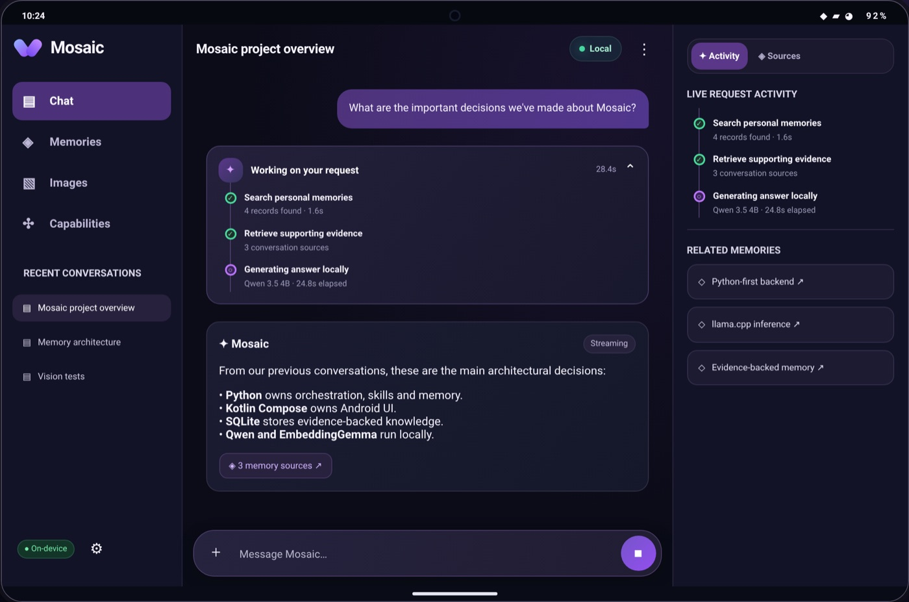
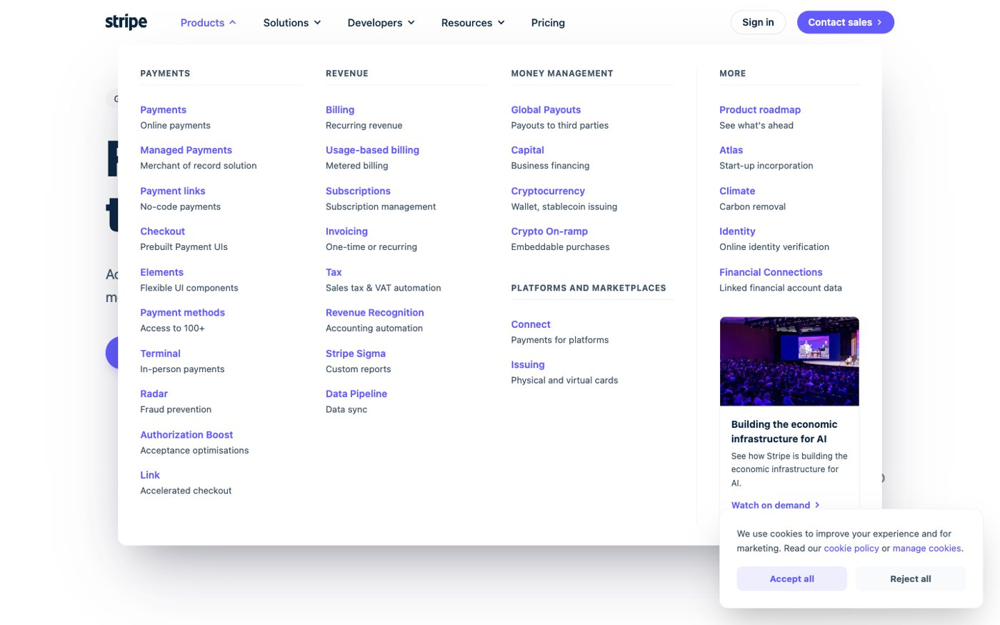

AI that builds software
An agentic pipeline turns plain-language requests into runnable LLM workflows, validated with a Z3 constraint solver and improved by a ReAct agent that replays and judges its own builds.
Around three years of production LLM systems in a regulated domain, on top of 5+ years of applied ML.
An agentic pipeline turns plain-language requests into runnable LLM workflows, validated with a Z3 constraint solver and improved by a ReAct agent that replays and judges its own builds.
Hierarchical RAG (doubled top-3 recall in internal tests), citation/source verification, and a Recursive Language Model pipeline for unindexed document collections.
A production voice mode on OpenAI Realtime with session-owned tools, interrupt handling and voice-specific guardrails.
Multi-tenant FastAPI microservices on Kubernetes/Azure: versioned modules, CI end-to-end tests, observability and rollback. Plus agentic dev tooling: an MCP server that sends issues to coding agents, which open PRs.
Recent open-source work on agents and on-device AI.

On-device multimodal AI for Android: Qwen 3.5 4B text and image inference fully on-device via llama.cpp + OpenCL, with semantic image retrieval and contextual memory.

An autonomous UI replication agent: an observe → generate → evaluate loop that rebuilds live UIs as React/Tailwind, scored with DOM diffs and multimodal visual evaluation.
A zero-shot computer-use agent that plays Infinite Craft from screenshots only, using a locally hosted Gemma 4 26B VLM and a stateful planning loop with hallucination checks.
The full story is on the About page.
Oct 2023 – present · Berlin
Muffintech GmbH: conversational AI for the insurance and financial-advisory industry (DACH). Agents, RAG, voice, workflow generation and platform.
May 2021 – Sep 2023 · Munich
STTech GmbH: document AI and NLP (NER/NEL, OCR), multi-GPU LLM fine-tuning, Kafka/FastAPI services and Kubeflow MLOps.
MICCAI ISIC 2019
Skin lesion classification with multi-resolution EfficientNet ensembles and patient metadata. Read the paper